Андрей, коротко: не дичь, а хорошая съёмка. Здесь есть 3–4 очень сильных кадра. Слабое место одно: вместе кадры пока не складываются в один пост, потому что смешаны цвет, ч/б, плёнка и разные рамки. Ниже: что ставить на обложку, какие кадры брать и в каком порядке, что убрать.
Номера дальше по тексту — отсюда. Красная рамка — обложка, бледные — убрать.
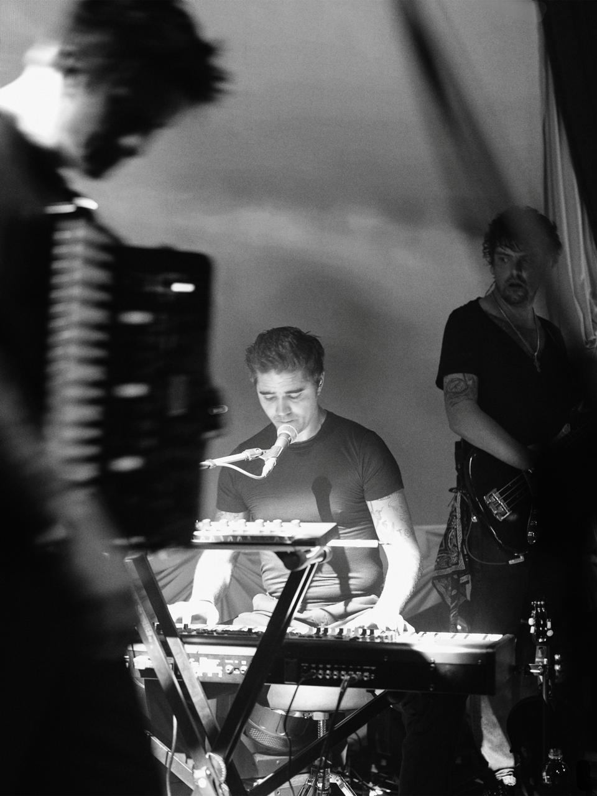
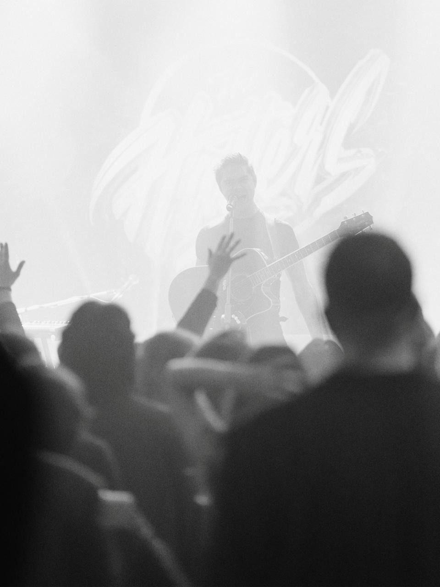
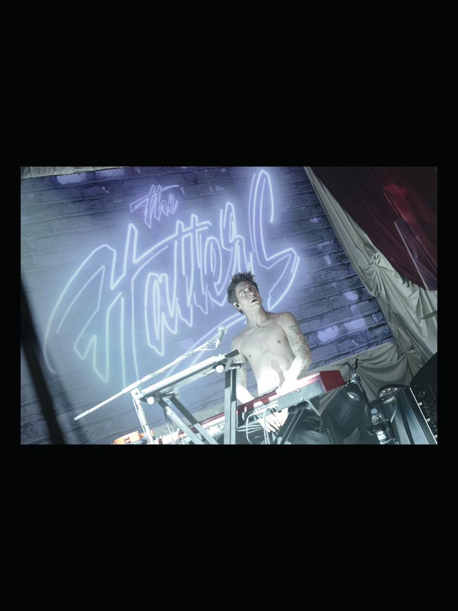
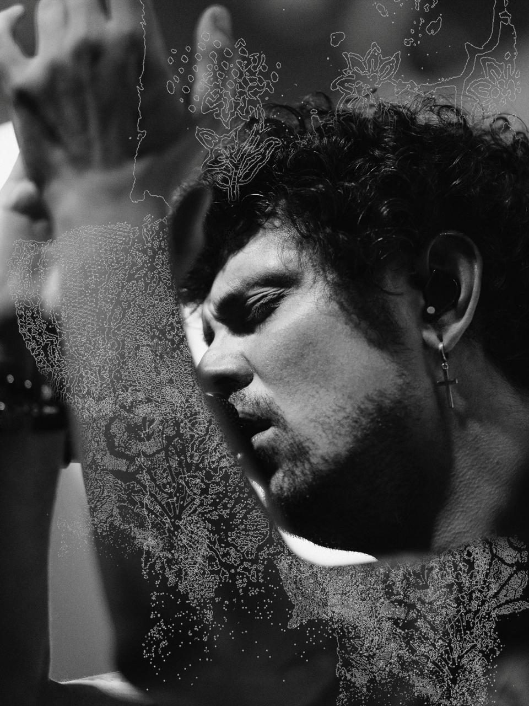
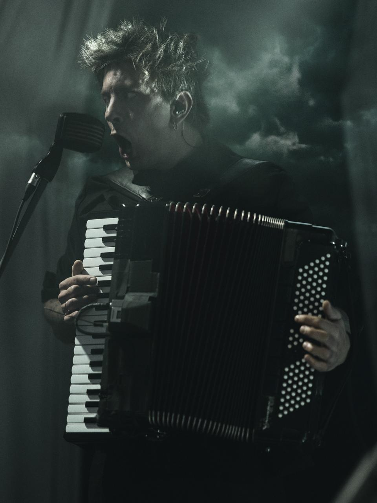
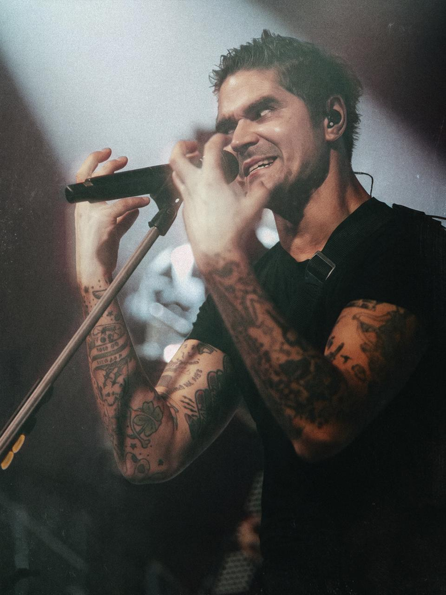
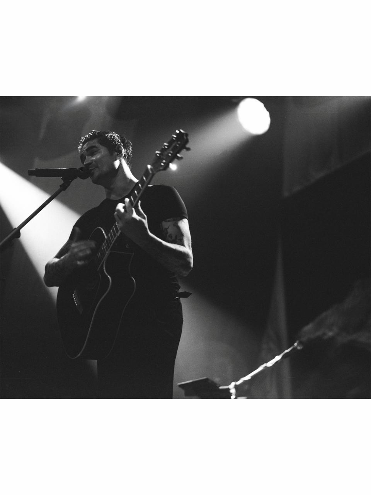
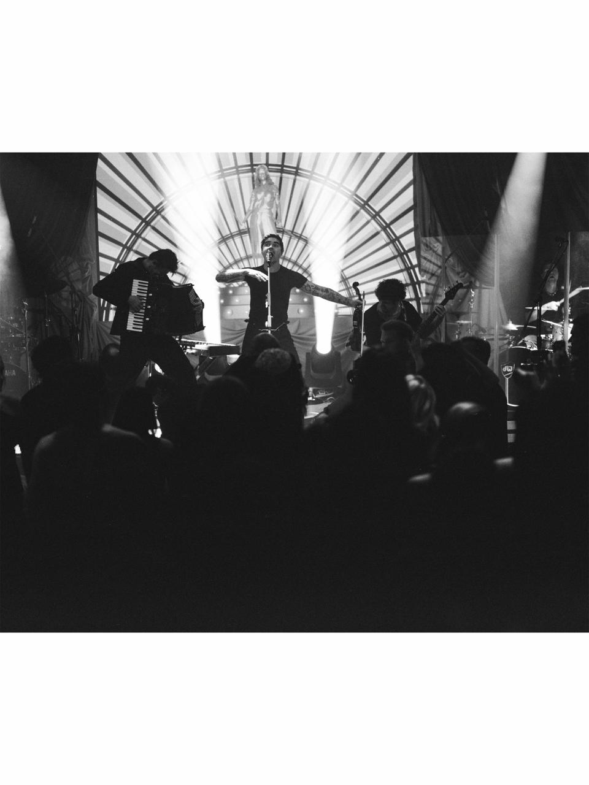
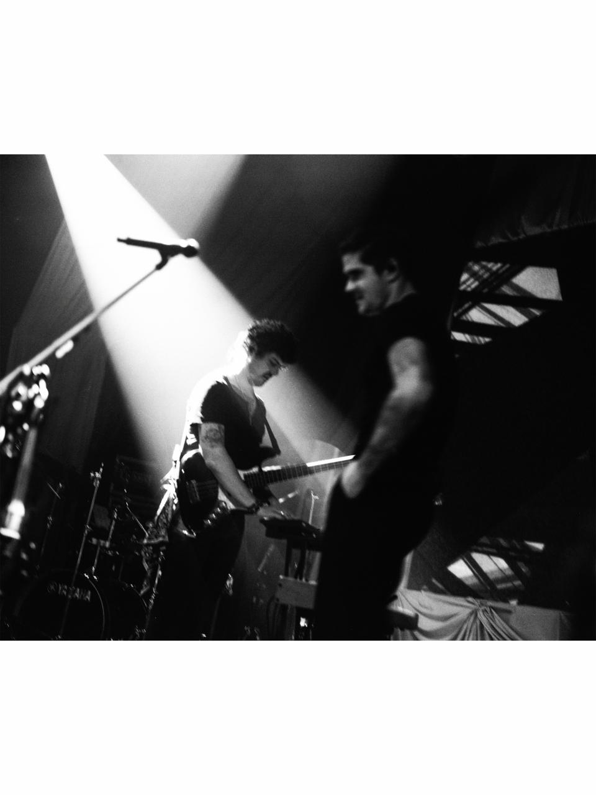
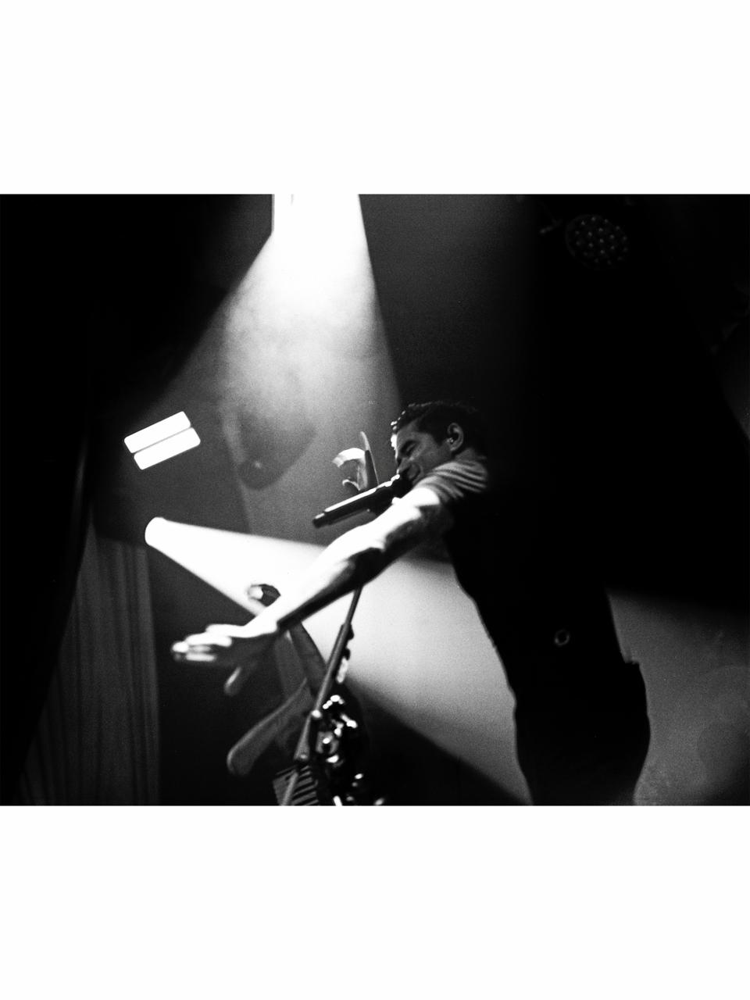
Аккордеонист кричит в микрофон на фоне зелёных облаков. Это самый сильный кадр в наборе.
Лицо и эмоция читаются даже в маленькой клетке сетки. Аккордеон сразу говорит, что это за группа. Цвет тёмный и киношный, такой кадр выделяется в ленте. Мимо него не пролистаешь.
Так он встанет в сетку профиля рядом с твоими последними постами:
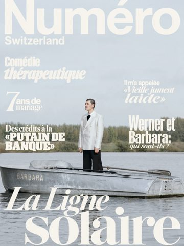
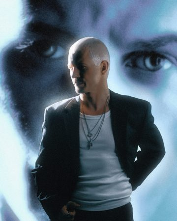
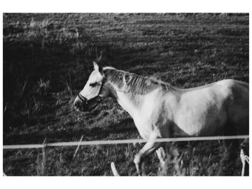
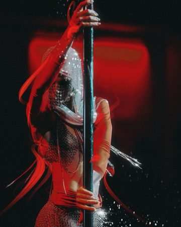
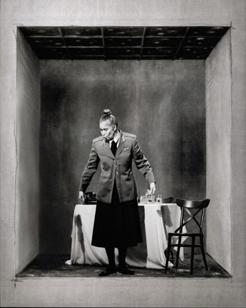
Запасной вариант — кадр 6. Солист в татуировках, тёплый свет. Его узнают фанаты The Hatters, а значит, его скорее понесут в репосты.
Плёночные кадры для обложки не подходят: они горизонтальные, в белой рамке и в сетке выйдут мелкими.
Чередуем крупное и общее, цвет и плёнку. Неоновая надпись в конце работает как подпись группы.
кадр 5 · обложка
Аккордеон и крик. Останавливает ленту.
кадр 8 · плёнка
Вся сцена, руки раскинуты, тёмный зал. Показывает, где мы.
кадр 6
Солист крупно, в цвете. Энергия и узнаваемость.
кадр 10 · плёнка
Тянется рукой сквозь луч. Лучший плёночный кадр, в нём есть движение.
кадр 1
Клавишник «сквозь» аккордеон. Взгляд изнутри группы, такого у концертных фотографов мало.
кадр 7 · плёнка
Гитара и прожектор. Спокойный кадр, даёт передышку.
кадр 9 · плёнка
Наклон, басист в луче. Живое, «из-за кулис».
кадр 3 · финал
Неон «the Hatters» — подпись группы прямо в кадре.
Засвечен почти до белого. На телефоне это будет выглядеть как брак, а не как задумка. Атмосфера есть, рука из толпы — хорошая деталь, но в наборе это самый слабый кадр.
Сам портрет сильный. Но белые контуры поверх выглядят как фильтр из приложения, и в посте такой кадр один. Если это задумка — лучше отдельным постом или в серии таких же. Без узоров я бы его взяла.
Сейчас рамки трёх видов: фото без полей, белые поля у плёнки и чёрные у кадра 3. Белые поля у плёнки — нормально, они честно показывают, что это плёнка. А кадр 3 лучше переделать на белые поля или кадрировать без полей.
Отдельно «цифра» (5, 6, 1, 3) и отдельно «плёнка» (8, 10, 7, 9). Плёночный пост может стать частью рубрики про плёнку. Два поста — это две публикации из одной съёмки.
Сама история хорошая: свадьба в Воронеже, а играют на ней The Hatters. С неё и стоит начать подпись. Например:
Обязательно отметь группу на фото и позови в соавторы (коллаб). Если они сделают репост, охват вырастет в разы. По разбору у тебя лучше всего работают как раз посты с артистами и организаторами.